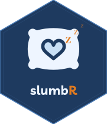

Sleep Diaries helper package for R — import, compute, and score.


[!WARNING] slumbR is in early development and has not been formally tested. The API may change without notice, scoring algorithms have not yet been validated against reference implementations, and the package has not undergone peer review. Use with caution and verify outputs independently before using in any research context.
📖 What is slumbR?
slumbR is the official R companion to the Sleep Diaries app. When a study ends, participants export their data as a JSON file. slumbR reads those files — one per participant or a whole directory at once — and hands you a clean, analysis-ready data frame in seconds.
It computes standard sleep variables (TIB, TST, SE, SOL, WASO) directly from the raw diary answers, re-scores all eight validated questionnaires bundled in the app (ESS, ISI, DBAS-16, MEQ, PSQI, RU-SATED, STOP-BANG, MCTQ), and assembles both long and wide study-level frames ready for downstream statistics or visualisation.
✨ Features
- 📥
read_export()— parse a single participant’s JSON export into a structuredslumbr_exportobject - 📂
read_study()— batch-read a whole directory of exports into aslumbr_studywith long, wide, and scores frames - 📐
compute_sleep_vars()— derive TIB, TST, SE, and clinical flags from raw morning diary answers - 🔀
diary_wide()— pivot to one row per participant × night withm_/e_prefixed columns - 📊
study_summary()— participant-level summary table (mean TST, SE, SOL, quality, etc.) - 🧮
score_questionnaire()— re-score any of the 8 instruments from raw answers; algorithms match the app exactly - ✅
score_all_questionnaires()— re-score an entire questionnaire data frame in one call
🗂️ Project Structure
slumbR/
├── R/
│ ├── slumbR-package.R # package-level docs and imports
│ ├── import.R # read_export(), read_study(), compute_sleep_vars()
│ ├── tidy.R # diary_long(), diary_wide(), study_summary()
│ └── questionnaires.R # score_questionnaire(), score_all_questionnaires()
├── inst/extdata/ # bundled example exports (3 simulated participants)
├── man/figures/
│ └── logo.svg # hex sticker
├── man/ # roxygen2-generated documentation
├── vignettes/
│ └── getting-started.Rmd # end-to-end worked example
├── tests/testthat/
│ ├── test-questionnaires.R
│ └── test-import.R
├── .github/workflows/
│ └── R-CMD-check.yaml
├── DESCRIPTION
├── LICENSE
└── slumbR.Rproj🚀 Getting Started
Prerequisites
- R ≥ 4.1
- The following packages (installed automatically):
jsonlite,dplyr,lubridate,purrr,rlang,cli
Installation
# Install from GitHub (requires remotes)
remotes::install_github("circadia-bio/slumbR")Basic usage
library(slumbR)
# ── Single participant ──────────────────────────────────────────────────────
p <- read_export("exports/P001.json")
p$diary # long-format: one row per diary entry
p$questionnaires # questionnaire results with raw answers
# ── Whole study ─────────────────────────────────────────────────────────────
study <- read_study("exports/")
study$diary # long-format, all participants combined
study$wide # wide-format: one row per participant × night
study$scores # questionnaire scores, one row per participant × instrument
# ── Participant-level summary ───────────────────────────────────────────────
study_summary(study)
#> participant_id n_morning n_evening n_nights mean_tst_h mean_se_pct ...
# ── Re-score a questionnaire ────────────────────────────────────────────────
score_questionnaire("ess", answers = list(
ess1 = 2, ess2 = 1, ess3 = 0, ess4 = 3,
ess5 = 1, ess6 = 0, ess7 = 2, ess8 = 1
))
#> $score
#> [1] 10
#> $label
#> [1] "Excessive"Try it with the bundled example data
[!NOTE] The bundled dataset is entirely simulated. The three participants (Sarah Chen, James Okonkwo, Priya Mehta) and all their diary entries and questionnaire responses are artificially generated for demonstration purposes. They do not represent real people or real study data.
extdata <- system.file("extdata", package = "slumbR")
study <- read_study(extdata)
study_summary(study)See vignette("getting-started", package = "slumbR") for a full worked example.
🛏️ Computed sleep variables
Morning diary entries are automatically enriched with the following derived variables when using read_export() or read_study():
| Variable | Definition | Reference threshold |
|---|---|---|
tib_min |
Time in bed (rise − bed), minutes | — |
tst_min |
Total sleep time (TIB − SOL − WASO), minutes | ≥ 420 min (7 h) |
se_pct |
Sleep efficiency (TST / TIB × 100), % | ≥ 85% |
sol_flag |
TRUE if SOL > 30 min |
Ohayon et al. (2017) |
se_flag |
TRUE if SE < 85% |
Morin (1993) |
waso_flag |
TRUE if WASO > 30 min |
Ohayon et al. (2017) |
tst_flag |
TRUE if TST < 7 h |
Hirshkowitz et al. (2015) |
🧮 Supported questionnaires
| ID | Full name | Score range | Reference |
|---|---|---|---|
ess |
Epworth Sleepiness Scale | 0–24 | Johns (1991) |
isi |
Insomnia Severity Index | 0–28 | Morin et al. (2011) |
dbas16 |
Dysfunctional Beliefs and Attitudes about Sleep | 0–10 (mean) | Morin et al. (2007) |
meq |
Morningness–Eveningness Questionnaire | 16–86 | Horne & Östberg (1976) |
psqi |
Pittsburgh Sleep Quality Index | 0–21 | Buysse et al. (1989) |
rusated |
RU-SATED Sleep Health Scale | 0–24 | Buysse (2014) |
stopbang |
STOP-BANG Questionnaire | 0–8 | Chung et al. (2016) |
mctq |
Munich Chronotype Questionnaire | MSFsc + SJL | Roenneberg et al. (2003) |
Note: Some instruments require institutional permission for research use. Please verify licensing before use. The app’s
Settings → Questionnaire Creditsscreen lists the relevant permissions for each instrument.
📦 Dependencies
| Package | Version | Purpose |
|---|---|---|
| jsonlite | ≥ 1.8.0 | JSON parsing |
| dplyr | ≥ 1.1.0 | Data manipulation |
| lubridate | ≥ 1.9.0 | Date/time handling |
| purrr | ≥ 1.0.0 | Functional iteration |
| rlang | ≥ 1.1.0 | Error/warning infrastructure |
| cli | ≥ 3.6.0 | Progress and messages |
👥 Authors
| Role | Name | Affiliation |
|---|---|---|
| Author, maintainer | Lucas França | Northumbria University, Circadia Lab |
| Author | Mario Leocadio-Miguel | Northumbria University, Circadia Lab |
🤝 Related Tools
- 🌙 SleepDiaries — the cross-platform Sleep Diaries app that generates the exports slumbR reads
- 🔬 circadia-bio — the Circadia Lab GitHub organisation